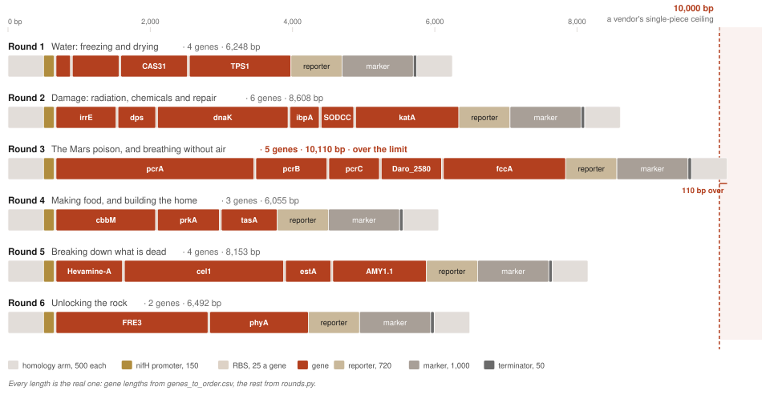

From 37 genes to MarsWorm
Stage 2 ends with a shopping list: 37 genes, 41,445 letters of DNA, each one copied from something already alive on Earth. A parts list is not a living thing.
This page closes that gap. Which organism carries the genes, why that one, and what order they go in.
The whole design, in one sentence
Start from a common soil bacterium, Azotobacter vinelandii. Add 24 genes, 27,546 letters of DNA, in 6 rounds, testing each round before paying for the next.
Everything else on this page is that sentence argued out. If you only read one thing, read this:
| The question | The short answer |
|---|---|
| Which living thing carries the genes? | Azotobacter vinelandii, a common soil bacterium |
| Why that one, and not a famous one? | It already has 13 of the 37 genes, and it cancels the design’s one clash |
| What order do the genes go in? | 24 genes in 6 cassettes, cheapest and most certain first |
| Why not just use CRISPR? | It solves one of the five problems, and this host does that one for free |
| What else did you think of? | E. coli, and building an actual worm. Both were worked out and turned down |
| Where is this design weakest? | Round 3 is a guess. Nobody has put perchlorate genes into this microbe |
The shopping list picks the microbe
The genes have to live inside something, and the order itself says what that something has to be. Three demands, read straight off the list.
| What the order demands | Why |
|---|---|
| It has to keep oxygen away from the fertiliser genes | Nitrogenase is destroyed within seconds of meeting oxygen |
| It has to be a bacterium | Any protein needing a plant or animal compartment was rejected before the order was written |
| It has to live in soil, and be harmless | This is going into dirt, and a school project cannot handle a pathogen |
And one name is already far ahead. Every gene was copied out of something that still has it, so the list says who gave the most:
| The donor | Genes | What they do |
|---|---|---|
| Azotobacter vinelandii ← the host | 13 | Make nitrogen fertiliser |
| Bacillus subtilis | 5 | Survive freezing, Digest food, General damage control, Team up with other microbes, Handle toxic chemicals |
| Dechloromonas aromatica | 4 | Detoxify the Mars poison |
| Hevea brasiliensis | 1 | Break down dead plants |
| and 14 others | 1 each | one job apiece, from bacteria, plants, two yeasts and a fish |
Every donor on the map of all 322 organisms
Start anywhere else and all 37 genes have to be moved. Start from Azotobacter vinelandii and 13 of them never move at all. They are already in there, already switched on, already working. That is 35% less to build, and it is the part nobody knows how to build.
Three reasons, strongest first
Being the biggest donor is not on its own a good reason. These three, together, are.
| The reason | Why it matters | |
|---|---|---|
| 1 | It already owns the hardest part | The 13 fertiliser genes are 34% of the shopping list, and they are
not 13 genes doing 13 jobs. They are one machine,
including a factory that builds the speck of metal at its heart. People
have been trying to move that machine into other microbes for fifty
years and it almost never works. In Azotobacter vinelandii it
is already home: nifD, nifK,
nifH1, nifB, nifN,
nifE, nifS, nifU,
nifF, nifW, nifV,
nifM, nifQ |
| 2 | It cancels the design’s one clash | The 4 genes that clear the Mars poison finish by giving off oxygen, and oxygen wrecks the fertiliser machine in seconds. Most microbes have no answer. This one has two, which is how it makes fertiliser in open air: a shield that wraps the machine the moment oxygen appears, and a furnace that burns spare oxygen away |
| 3 | You can actually work on it | A design nobody can build is not a design. Starve Azotobacter vinelandii of nitrogen and it swallows loose DNA by itself, with no special equipment and no tricks |
Reason 2 is a guess, and the boldest thing in this project. The shield and the furnace are textbook. Nobody has ever put perchlorate genes into Azotobacter vinelandii, so nobody knows whether they can cope with that much oxygen. That is why it is tested at round 3 of 6, before anything expensive depends on it.
What the lab needs to know
| What is true of this microbe | What the lab does about it |
|---|---|
| It swallows straight DNA better than DNA in a circle | Order it straight |
| DNA with a matching stretch of its own on each end works 10 to 50 times better | Copy those stretches from its published genome |
| Feed it nitrogen and it stops swallowing | Starve it of nitrogen first. This is the step that must not be skipped |
Sources: plasmid transformation · nitrogen control of competence · homology-facilitated transformation
And the runner-up could not be opened at all. Dechloromonas aromatica donates the perchlorate genes and would otherwise be an obvious host, but nobody has published a way of getting DNA into it. (asserted) A microbe you cannot open cannot be the host.
Azotobacter vinelandii is also safe to work with: a common soil bacterium that causes no disease, at the lowest hazard level there is. (cited, checked)
The 6 rounds
The 24 genes do not go in all at once. They go in as 6 cassettes, one round of lab work each, and every round ends in a test. A round that fails stops the project before the next one is paid for.
Two rules decide what travels together. Genes go with the genes they work with, so a failed round points at one idea instead of five. The cheap, certain rounds go first, so the one real gamble is reached with as little money spent as possible. (judgement)
| What the round adds | Genes | Just the genes | With the machinery | Tubes | |
|---|---|---|---|---|---|
| 1 | Water: freezing and drying | 4 | 3,228 | 6,248 | 1 |
| 2 | Damage: radiation, chemicals and repair | 6 | 5,538 | 8,608 | 1 |
| 3 | The Mars poison, and breathing without air ⬅ the one real gamble | 5 | 7,065 | 10,110 | 2 |
| 4 | Making food, and building the home | 3 | 3,060 | 6,055 | 1 |
| 5 | Breaking down what is dead | 4 | 5,133 | 8,153 | 1 |
| 6 | Unlocking the rock | 2 | 3,522 | 6,492 | 1 |
| Total | 24 | 27,546 | 45,666 | 7 |
Reading the table, what each column counts
| The column | What it means |
|---|---|
| Genes | How many of the 24 genes travel in this round |
| Just the genes | The letters of DNA in those genes, and nothing else |
| With the machinery | The whole cassette. A gene on its own does nothing, so each one also carries a switch to turn the genes on, a glow gene to show it worked, a piece of the microbe’s own DNA at each end to hold it in place, and a tag for spotting the cells that took it. That costs about 3,000 letters every round, which is exactly why genes travel in groups |
| Tubes | How many pieces the cassette is ordered as. The company we would use builds up to 10,000 letters in one piece, so 5 of the 6 rounds arrive as a single tube |
How the genes are made
Nothing is cut out of a living thing. A company prints the DNA to order. The only limit that matters is length: it builds up to 10,000 letters in one piece, and 5 of the 6 cassettes fit inside that.
Round 3 does not. It needs 10,110 letters, which is 110 over the limit, about 1% too big. There are two ways round that. Order it as two pieces that overlap and let the microbe join them, which is the same trick it already uses to slot a cassette into its chromosome. Or trim a little off each end so the whole thing fits in one piece.
Which route to take is the lab’s call, not ours. Five ways to build it works each one out end to end, and says what it costs.

What happens in each round
Every round below is one cassette, one trip to the bench, and one test at the end. Open any of them to see which genes travel together, why those particular genes, what the test actually is, and what it would mean if that round failed.
Round 1: Water: freezing and drying · 4 genes · 6,248 letters
| About this round | Detail |
|---|---|
| The genes | cspB, Antifreeze protein,
CAS31, TPS1 |
| Why these together | Both are the same problem: what happens to a cell when its water freezes, or when its water leaves. Stage 4 already has a protocol for each. |
| The test | Freeze it and thaw it; dry it out. Modified strain against plain, side by side. Stage 4’s two protocols, unchanged. |
| If it fails | No difference between the two strains. The proteins are not being made, or are not folding. |
Round 2: Damage: radiation, chemicals and repair · 6 genes · 8,608 letters
| About this round | Detail |
|---|---|
| The genes | irrE, dps, dnaK,
ibpA, SODCC, katA |
| Why these together | Every gene here does one job: protect molecules under attack, or mend them afterwards. Splitting them would test half a system. |
| The test | Shine a measured dose of UV on it, and splash it with a measured dose of a bleach-like chemical. Does it live? |
| If it fails | No difference. This defence has to work before the next round is safe to try, because clearing the Mars poison makes harsh chemicals inside the cell. |
Round 3: The Mars poison, and breathing without air · 5 genes · 10,110 letters ⬅ the one real gamble
| About this round | Detail |
|---|---|
| The genes | pcrA, pcrB, pcrC,
Daro_2580, fccA |
| Why these together | Clearing the poison and breathing without air are the same trick: the cell breathes the poison instead of oxygen. The gene that helps it breathe without air belongs here, not off on its own. |
| The test | Three measurements at once: is the poison gone, is it still making fertiliser, and can it grow with no air? |
| If it fails | The poison clears but the fertiliser stops. This is the crux of the whole design: clearing the poison gives off oxygen, inside a cell whose nitrogen machine oxygen destroys. If the fertiliser stops, the microbe’s own oxygen defences were not enough. |
Round 4: Making food, and building the home · 3 genes · 6,055 letters
| About this round | Detail |
|---|---|
| The genes | cbbM, prkA, tasA |
| Why these together | Two of these genes make food out of thin air; the third builds the slimy home it gets made in. All of it is about settling in rather than hanging on. |
| The test | Does it grow with no food added at all, and does it build itself a home you can see? |
| If it fails | No growth without added food. Nothing is feeding the loop, so the loop cannot start. |
Round 5: Breaking down what is dead · 4 genes · 8,153 letters
| About this round | Detail |
|---|---|
| The genes | Hevamine-A, cel1, estA,
AMY1.1 |
| Why these together | Four tools the cell pushes out through its own wall, all chewing up something lying outside it. This is the earthworm’s actual job. |
| The test | Put it on plant fibre, shells, starch and fat. Do they disappear? |
| If it fails | Nothing disappears. The usual culprit is not the tool but the door. Getting an enzyme out of a cell is harder than making it. |
Round 6: Unlocking the rock · 2 genes · 6,492 letters
| About this round | Detail |
|---|---|
| The genes | FRE3, phyA |
| Why these together | Prising iron and phosphorus out of solid stone. Useful on its own, and nothing else depends on it, so if the money runs out, this is the safest place for it to run out. |
| The test | Does iron and phosphorus come out of ground-up Mars-like rock? |
| If it fails | The rock is unchanged. Nothing earlier is undone; the microbe simply cannot mine. |
Every round is the same four jobs
| The job | What it means | |
|---|---|---|
| 1 | Print the DNA | Send the letters to a company. A dried speck comes back in the post |
| 2 | Put it in the microbe | Starve the cells until they swallow it. The matching ends hold it in place |
| 3 | Find the cells that took it | The tag lets them live on a plate that kills everything else, and the glow gene says the switch is on |
| 4 | Run the round’s test | Modified microbe against plain microbe, side by side, before the next cassette is ordered |
What arrives in the box, and what the lab does with it · those four jobs, day by day
Why not just use CRISPR?
Everybody asks this, and it is a fair question. CRISPR is the famous one, the tool that edits DNA, so surely it is how you build a microbe?
Here is the thing nobody mentions. Putting a gene into a cell is five separate problems, and CRISPR solves the first one. It happens to be the one everybody assumes is hardest.
| The step | CRISPR? | What is actually needed | |
|---|---|---|---|
| 1 | Get the DNA into the right place | ✅ yes | This is the step people mean when they say CRISPR, and it is genuinely close to solved. One CRISPR tool can carry about 10,000 letters in at a time |
| 2 | Get the cell to read it | ❌ no | A gene with no switch in front of it is a sentence nobody is asked to read. CRISPR does not choose the switch |
| 3 | Get the protein to fold right | ❌ no | A protein that folds properly inside a fish may come out as a useless tangle inside a soil bacterium. Nothing can promise this |
| 4 | Give the protein the metal it needs | ❌ no | The nitrogen machine only works with a tiny metal cluster at its heart, built by a production line of its own. This is why the design refuses to move it |
| 5 | Let the cell carry the extra load | ❌ no | Every added protein costs the cell energy it could have spent growing. You cannot find out until you build it |
So, three things to take away:
- CRISPR is a delivery tool, not a building tool. It answers where does this gene go, and nothing else on the list
- The hard part is steps 2 to 5, over and over, which is exactly why MarsWorm is built in 6 rounds instead of one go
- This build does not need CRISPR at all. Azotobacter vinelandii swallows loose DNA and files it away by itself. The host was chosen because it does the one solved step for free
What we thought of, and turned down
Two other designs were worked out properly and then turned down. Their reasons are kept here, because a design with no rejected alternatives was never really a choice.
| A blank-slate host, such as E. coli | Making an actual worm | |
|---|---|---|
| The idea | Start from E. coli, the best-understood bacterium on Earth, and move all 37 genes into it | Engineer C. elegans, the roundworm this project is named after |
| What was good about it | Every tool already built, every recipe already written. It is the microbe school kits use | It is a worm, doing a worm’s job. The obvious thing to build |
| Why we did not | All 37 genes have to move, including the nitrogen
machine. Fifty years of trying to move that machine into other
microbes, and it almost never works: the DNA goes in, the machine does
not come out right at the other end It has no defence against oxygen. The one clash in this design would have to be solved from scratch, by us It lives in guts, not soil. MarsWorm’s whole job happens in dirt |
Most of the design has nothing to change in a worm.
Many of the 37 genes have no counterpart in any animal No animal makes its own fertiliser. The biggest block of the design has no way into an animal at all An animal needs air, water and meals. A microbe needs nothing but dirt |
| What we kept | It is still the fastest place to test a single cassette before spending real money on the real host | The name, and the job. What an earthworm does is still exactly what MarsWorm has to do. It just will not be a worm doing it |
Where this design is weakest
Every one of these is a real problem, written down on purpose. A design that lists no weaknesses has not been looked at hard enough.
| The weakness | How bad is it? |
|---|---|
| The gamble has never been tried. Nobody has put a perchlorate gene into Azotobacter vinelandii | Real, and the big one. It is why round 3 exists, and why nothing expensive comes before it |
| It cannot go properly dormant. Some microbes survive by turning into a seed-like spore. This one only half does | Real. Rounds 1 and 2 have to work harder to make up for it (asserted) |
| 24 separate genes going into one microbe, each a chance for something to go wrong | Real, but every one is tested before the next goes in |
| The cell has to carry all of it. Extra proteins cost energy it would otherwise grow on | Real, and impossible to measure until it is built |
| There is no plan B. If Azotobacter vinelandii cannot cope with perchlorate, the design has nowhere else to go | Real. Round 3 is early so this is found before the costly rounds |
| Nothing here has been built. | The honest headline |